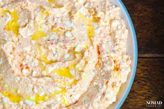

Tirokafteri sauce

Simple goes perfect with meat or accompanying a pita gyros
All you need is
- 50 g olive oil
- 1/2 chili pepper
- A spoon or two of paprika
- 400 g feta cheese
- 200 g strained yogurt
- Salt
Steps for the preparation
- Mix in a blender oil,pepper,chilli flakes,paprika,bit salt
- Mixed with the yoghurt and the feta chopped
- Put everything in bowl and mix gently
- Finish it with some more olive oil